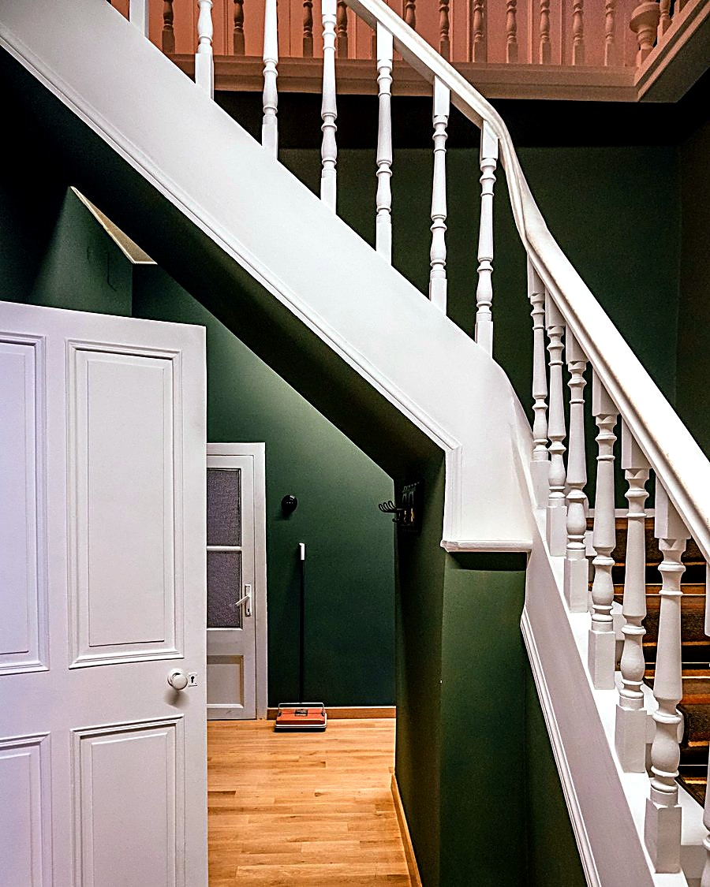

Peinture de façade en Normandie : quelle solution face au climat ?

La peinture de façade est sans doute le poste le plus exposé au climat normand. Entre les pluies fréquentes, l'humidité ambiante et parfois les embruns près du littoral, une façade mal préparée ou mal peinte se dégrade vite. Voici ce qu'il faut savoir avant de se lancer.
Le climat normand, un facteur à part entière
Contrairement à des régions plus sèches, la Normandie connaît une alternance fréquente d'humidité et de séchage. Cela favorise le développement de mousses, lichens et micro-organismes sur les façades peu ou mal exposées au soleil (façades nord notamment), ce qui accélère l'usure de la peinture si elle n'est pas traitée en amont.
Les étapes indispensables avant de peindre une façade
- Diagnostic du support : fissures, salpêtre, état de l'enduit existant.
- Traitement anti-mousse : indispensable sur la quasi-totalité des façades normandes, à renouveler périodiquement.
- Rebouchage des fissures : avec un mastic ou un enduit adapté au support (pierre, parpaing enduit, brique).
- Application d'une sous-couche : impérative pour l'accroche et l'uniformité du rendu final.
Quelle peinture choisir ?
Pour une façade exposée aux intempéries normandes, deux familles de produits se distinguent généralement : les peintures pliolite (très résistantes à l'humidité, séchage rapide même par temps frais) et les peintures siloxanes (hydrofuges, qui laissent respirer le mur tout en repoussant l'eau). Le choix dépend de la nature du support et de l'exposition de la façade.
À quelle fréquence ravaler une façade en Normandie ?
En moyenne, une façade bien préparée et peinte avec des produits adaptés tient entre 10 et 15 ans. Sur une façade très exposée (vent dominant, façade nord, proximité du littoral), ce délai peut descendre à 7-8 ans si le traitement anti-mousse initial n'a pas été suffisant.
Le bon moment pour les travaux
La fenêtre idéale se situe entre le printemps et le début de l'automne, avec des températures stables (au-dessus de 8-10°C) et peu de risque de pluie dans les jours suivant l'application. Un professionnel local suit la météo de près pour caler les chantiers de façade au bon moment.
Un projet de peinture en Normandie ?
Demander mon devis gratuit